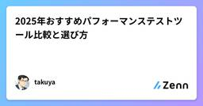
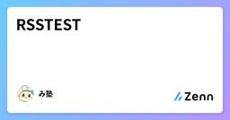
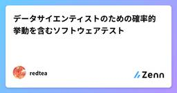
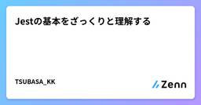
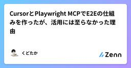
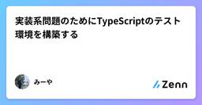

Zennの「Test」のフィード
フィード
Jestで非同期のテスト方法について
Zennの「Test」のフィード
はじめにJestの基礎はざっくり理解したので、非同期テスト方法の方法ついて学びたいと思いました。Jestの基礎がある程度分かっている方が対象になります。 この記事で学べることasync/awaitを使用した非同期の場合や、コールバック関数を使用した場合のテストケースの作成方法について学べます。 動作環境OS：macOS Sequoia 15.1.1Node.js：22.6.0npm：10.8.2Jest：29.7.0 インストール方法Jestの環境構築についてはこちらをご確認ください。 基本的な使い方非同期のテストの場合はtest関数にasync...
7時間前
Jestでモックの作成方法について
Zennの「Test」のフィード
はじめにJestの基礎はざっくり理解したので、公式ドキュメントに沿って次はモックについて学びたいと思いました。Jestの基礎がある程度分かっている方が対象になります。 この記事で学べることStripeのテストやAPIを実行できない場合、テスト環境の用意に時間が掛かってしまうなどでテストデータが用意できない場合にモックでテストデータを作成する方法について学べます。 動作環境OS：macOS Sequoia 15.1.1Node.js：22.6.0npm：10.8.2Jest：29.7.0 インストール方法Jestの環境構築についてはこちらをご確認ください...
9時間前

2025年おすすめパフォーマンステストツール比較と選び方
Zennの「Test」のフィード
最近、自分が担当しているプロジェクトでパフォーマンス問題が発生して、めちゃくちゃ焦りました（汗）。上司から「負荷テストやってなかったの？」って言われて、正直パフォーマンステストの重要性を痛感しましたね。そこで今回は、2025年に使える最強のパフォーマンステストツール5選を紹介します！これからパフォーマンステストを始める初心者の方も、すでに経験がある方も、ぜひ参考にしてください！ パフォーマンステストって何？なぜ必要なの？パフォーマンステストは、ソフトウェアやシステムの性能を評価するテスト方法です。機能テストとは違って、「動くかどうか」ではなく「高負荷時にどれだけ安定して動くか」を...
2日前
gomock の InOrder に挫折！？1回目と2回目の返り値を変える方法とその裏技 1
1
Zennの「Test」のフィード
1. gomock で実行順序を制御する方法 1-1. gomock.InOrder() の基本GoMockには、メソッド呼び出し順序を厳密にテストしたいときのために InOrder(...) という関数が用意されています。具体的には、gomock.InOrder( mockObj.EXPECT().MethodA().Return(...), mockObj.EXPECT().MethodB().Return(...),)という形で宣言すると、「MethodA → MethodB の順番で呼ばれる」ことを担保できるわけです。この記述を行わない場合は、Me...
3日前

RSSTEST
Zennの「Test」のフィード
寿限無 寿限無 五劫のすり切れ 海砂利水魚の 水行末、雲来末、風来末 食う寝るところに住むところ やぶらこうじのぶらこうじ パイポパイポパイポのシューリンガン シューリンガンのグーリンダイ グーリンダイのポンポコピーのポンポコナーの長久命の長助
3日前
フロントエンドのテスト、もう全部 Storybook でよくない？→よくなかったけどちょうどいい落とし所が見つかった
Zennの「Test」のフィード
「このフロントエンドのテスト、全部 Storybook でいいんじゃない？」そんな考えから始まった試行錯誤の記録をご紹介します。 モチベーション私が担当しているプロジェクトでは Jest + Storybook + MSW を使用していて、テスト方法としては次のような構成を採用していました。Storybook で Arrange と Act までを定義（UI 状態とユーザー操作を Story として表現）Jest でその Story をレンダリングし、play 関数を実行、結果をアサーションimport { composeStories } from '@storybo...
4日前

データサイエンティストのための確率的挙動を含むソフトウェアテスト
Zennの「Test」のフィード
はじめに最近 Zenn に記事を書くことをライフワークにしたいと思っている redtea です。本業として所属する組織が変わりましたので、当面の間は個人で Zenn 記事を書いていく予定です。機械学習や数理最適化の実務を担当していると、そのソフトウェアに含まれる確率的挙動によりデバッグやテストに苦労することがあるかもしれません。多くの場合でシード値[1]を固定することでデバッグやテストができますが、それだけでは不十分なこともあります。本記事では、確率的挙動を含むソフトウェア、特に機械学習・数理最適化分野のシステムに対するテスト戦略に焦点を当て、私なりの考え方と具体的な実践方法を...
4日前
Flutterのアプリにゴールデンテストを導入
Zennの「Test」のフィード
はじめにアプリを作ろうと思ったんですが、いろいろ始める前に、なにかするとすぐ画面が崩れるので、知らないところでそうならないよう、画面の差分があったときにはちゃんと来づけるようにしたい…と思い、ゴールデンテストを導入することにしました。…というわけで設定作業を始めたのですが…ちゃんとアプリの画面が取れるようになるまでに苦労があったので、そこをシェアしようかな、と思った次第です。 結論alchemistのサンプルには、ListTileのテストが書かれていまして…そのままアプリのページのMyApp（flutter create直後にできるヤツ）を置き換えても、ものすごい大量の例...
4日前

Jestの基本をざっくりと理解する
Zennの「Test」のフィード
はじめにPHPUnitの学習はしましたがJestも使う機会があったので、同じタイミングで学習しました。その学習の過程をまとめたのが本記事です。 Jestとは？Jestは、Facebook（現Meta）が開発した、JavaScript・TypeScript向けのテスティングフレームワークです。主に フロントエンドアプリケーション（Reactなど） の単体テストやスナップショットテストに使われます。 この記事で学べることJestの基本的な書き方や、ユニットテストの方法が学べます。実際のテストの具体例を見てテストとはどういうものなのか？をざっくりと把握できます。 動作...
5日前
PHPUnitのモックとスタブの使い方
Zennの「Test」のフィード
はじめにPHPUnitのモックとスタブ学習したので、備忘録としてまとめておく記事です。PHPUnitのインストールや詳細な使い方については、こちらの記事を参考にしていただければと思います。 この記事で学べること他のコンポーネントに依存するメソッドやクラスをテストする際、実際のデータや外部環境を使わずに、モックやスタブを使ってテスト用のデータや挙動を再現する方法を学べます。 動作環境OS：macOS Sequoia 15.1.1PHP：8.4.4PHPUnit：12.1.4Composer：2.5.1 テストダブルとは？偽物のオブジェクトを使ってテストす...
6日前
PHPUnitのDataProviderの使い方
Zennの「Test」のフィード
はじめにPHPUnitを学習する機会があったので、備忘録としてまとめておく記事です。PHPUnitのインストールや詳細な使い方については、こちらの記事を参考にしていただければと思います。 この記事で学べることデータプロバイダーを使用して、1つのメソッドを複数のデータセットでテストする方法がわかります。 動作環境OS：macOS Sequoia 15.1.1PHP：8.4.4PHPUnit：12.1.4Composer：2.5.1 DataProvidersを使用しない場合引数の値を足し算した結果を返すクラスをテストします。src/Calculato...
6日前
PHPUnitの基本をざっくり理解する
Zennの「Test」のフィード
はじめにこれまでテストコードに触れたことがなかったのですが、今回実務で扱う機会があったため、初めて勉強してみる事にしました。その学習の過程をまとめたのが本記事です。 PHPUnitとは？PHPUnitは、PHPで単体テスト（ユニットテスト）を実行するためのフレームワークです。ユニットテストは、個々の関数やメソッドが意図した通りに動作するかを確認するためのテストです。PHPUnitを使うことで、バグの発見やコードのリファクタリングをより安全に行うことができます。 この記事で学べることPHPUnitの基本的な書き方や、ユニットテストの方法が学べます。実際のテストの具体例を...
6日前

CursorとPlaywright MCPでE2Eの仕組みを作ったが、活用には至らなかった理由
Zennの「Test」のフィード
はじめに初めまして。私は現在都内のスタートアップでプロダクト開発をしております。私が所属するチームでは現在十数人程度のフルサイクル・フルスタックエンジニアがプロダクト開発を行なっていますが、専属のQAメンバーがいないためプロダクトの品質保証が課題になっていました。加えて開発チームとしてはAIを積極活用することで生産性やプロダクトの品質の向上を積極的にしていこうということになっていました。AutifyなどのE2Eツールの導入も検討しましたが、費用や保守面でのコスト負担が大きく、難しい状況でした。そんな状況のなか、先日Playwright MCPが公開されたのでこれをうまく使え...
7日前

実装系問題のためにTypeScriptのテスト環境を構築する
Zennの「Test」のフィード
こんにちは，みーやです！初夏の候，この季節はエンジニア学生向けサマーインターンの選考が各所で行われているかと思います．実際に私も複数社の選考を受けている最中でして，特に最初の壁となるのはコーディングテストかと思います．コーディングテストの中には複雑な仕様が与えられる問題があり，問題の規模や複雑さから，理解に時間がかかったりケアレスミスでコードに間違いがあるなどして，時間がかかるケースがよくあると思います．そのような場合にローカル PC で効率的にテストするための環境構築の方法をご紹介します！（背景として，このテスト環境構築に時間がかかったのと，この環境がもたらすメリットがい...
7日前

PlaywrightのAPIテストでトークンを使いまわす
Zennの「Test」のフィード
はじめにPlaywrightは、WebアプリケーションのE2Eテスト行うツールとしての印象が強いですが、APIテストも実行することができます。ここでは、APIテストを書く際にトークンを使いまわす方法について説明します。 実現したいことWeb API のよくある仕様として、ログイン用のAPIにユーザー認証情報を送信して、トークンを取得し、そのトークンを使って他のAPIを利用するというものがあります。ログイン以外のAPIのテストをするときに、毎回ログイン用APIを実行してトークンを取得し、その後本来実行したいAPIを実行するのは、テストの実行時間が長くなります。ここでは、ログ...
8日前
Playwrightでログイン状態を保持する
Zennの「Test」のフィード
はじめにWebアプリケーションのテストで「あらかじめログインした状態からテストを始めたい」というのはよくあるニーズです。Playwrightでは、Authenticationにあるように、ログイン後の browser state を保存して、使い回すのが基本的な実装方法です。ここではサンプルコードを紹介します。 ログイン状態の保持 セッションの保存tests/auth.setup.tsimport { test as setup, expect } from '@playwright/test';const sessionFile = '.auth/user.js...
8日前
Widgetテストを超えて: LTL/MTLでFlutterのタイミング＆順序バグを捉える
Zennの「Test」のフィード
1. 導入: Flutterテストにおける「時間」という挑戦Flutterを使えば、モバイル、ウェブ、デスクトップ向けの美しいネイティブアプリケーションを、単一のコードベースから構築できます。私たちは、リッチなアニメーション、スムーズなトランジション、レスポンシブなインタラクションを備えた動的なユーザーインターフェースを作成します。しかし、このようなスムーズな体験の裏側には、テスト戦略において課題となる複雑さが潜んでいることがよくあります。それが時間という要素です。考えてみてください。ローディングインジケーターがデータ表示前に常に表示され、その後速やかに消えることを厳密に検証する...
9日前